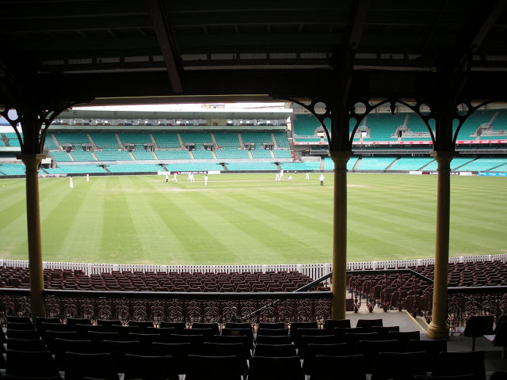

Biography
Archives
Chronicles of Cricketers
Journey through historical Cricket
Women's Cricket
The IPL
ICC ODI World Cups
ICC T20 World Cups
Test Series and World Test Championship
Articles, Videos, and Analysis
Stories, Analysis, Commentary, Articles from the Game of Cricket.
Follow @Anirudh41186925
Tweets by Anirudh41186925

Contact Me here